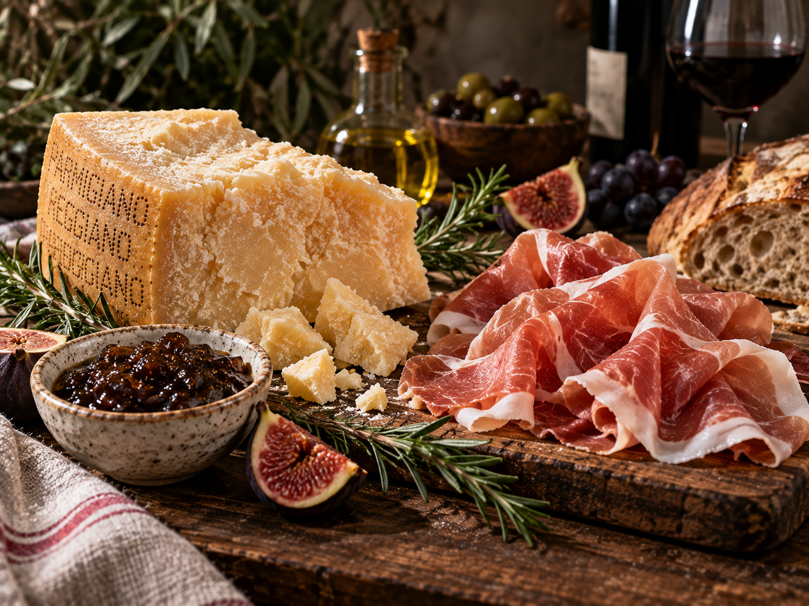

NEIGHBORHOOD DELICATESSEN
The Deli Counter, Beyond the Pasta Case.
A rotating selection of house-simmered sauces, aged cheeses, marinated antipasti, and Italian-inspired pantry favorites.

SAMPLE DAILY COUNTER
Featured Counter Highlights
Sample demonstration selection. All items subject to seasonal availability at the deli.
HOUSE SAUCE
HOUSE TOMATO SAUCE
San Marzano passata simmered 4 hours with fresh basil.
Suggested use: Tagliatelle or Gnocchi base 🔍 Click for details
HOUSE PESTO
BASIL PESTO
Pounded basil leaves, pine nuts, garlic, and Ligurian olive oil.
Suggested use: Orecchiette coat or crostini spread 🔍 Click for details
IMPORTED CHEESE
PARMESAN (24 MONTHS)
Nutty, crystalline aged Parmigiano-Reggiano cut from whole wheels.
Suggested use: Freshly grated atop warm pasta 🔍 Click for details
ANTIPASTI
MARINATED VEGETABLES
Artichoke hearts, sun-dried tomatoes, and sweet baby peppers.
Suggested use: Dinner starter platter 🔍 Click for details
PANTRY SPECIALTY
CASTELVETRANO OLIVES
Bright green Sicilian olives cured in light brine with citrus zest & bay leaf.
Suggested use: Aperitivo snack or pasta salad finish 🔍 Click for details
ARTISAN CONDIMENT
TRUFFLE BALSAMICO
Aged Modena balsamic vinegar infused with black winter truffle essence.
Suggested use: Drizzled over Parmigiano, meats or gnocchi 🔍 Click for details
INTERACTIVE MEAL BUILDER
Build Your Dinner
Combine fresh pasta, house sauce, and deli finishes to shape your personalized dinner menu.